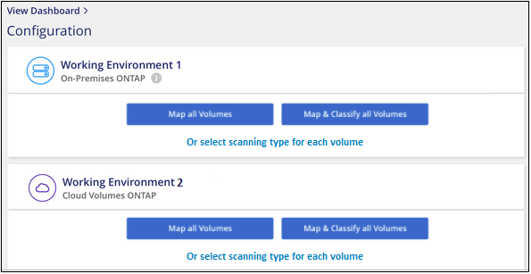

Notes de mise à jour
Notes de mise à jour
Mise en route de la classification BlueXP pour Cloud Volumes ONTAP et ONTAP sur site
 Suggérer des modifications
Suggérer des modifications
Procédez en quelques étapes pour commencer l'analyse de vos volumes ONTAP Cloud Volumes ONTAP et sur site à l'aide de la classification BlueXP.
Démarrage rapide
Pour commencer rapidement, suivez ces étapes ou faites défiler jusqu'aux sections restantes pour obtenir de plus amples informations.
 Découvrez les sources de données que vous souhaitez analyser
Découvrez les sources de données que vous souhaitez analyserAvant de pouvoir numériser des volumes, vous devez ajouter les systèmes en tant qu'environnements de travail dans BlueXP :
-
Pour les systèmes Cloud Volumes ONTAP, ces environnements de travail devraient déjà être disponibles dans BlueXP
-
Pour les systèmes ONTAP sur site, "BlueXP doit découvrir les clusters ONTAP"
 Déployez l'instance de classification BlueXP
Déployez l'instance de classification BlueXP"Déployez la classification BlueXP" si aucune instance n'est déjà déployée.
 Activez la classification BlueXP et sélectionnez les volumes à analyser
Activez la classification BlueXP et sélectionnez les volumes à analyserSélectionnez l'onglet Configuration et activez les analyses de conformité pour les volumes dans des environnements de travail spécifiques.
 Vérifiez l'accès aux volumes
Vérifiez l'accès aux volumesUne fois la classification BlueXP activée, assurez-vous qu'elle peut accéder à tous les volumes.
-
L'instance de classification BlueXP nécessite une connexion réseau à chaque sous-réseau Cloud Volumes ONTAP ou système ONTAP sur site.
-
Les groupes de sécurité pour Cloud Volumes ONTAP doivent autoriser les connexions entrantes à partir de l'instance de classification BlueXP.
-
Assurez-vous que les ports suivants sont ouverts pour l'instance de classification BlueXP :
-
Pour NFS - ports 111 et 2049.
-
Pour CIFS : ports 139 et 445.
-
-
Les règles d'exportation des volumes NFS doivent autoriser l'accès à partir de l'instance de classification BlueXP.
-
La classification BlueXP requiert des informations d'identification Active Directory pour analyser les volumes CIFS.
Cliquez sur Compliance > Configuration > Modifier les informations d'identification CIFS et fournissez les informations d'identification.
 Gérer les volumes à analyser
Gérer les volumes à analyserSélectionnez ou désélectionnez les volumes à analyser ; la classification BlueXP démarre ou arrête leur analyse.
Recherche des sources de données que vous souhaitez analyser
Si les sources de données que vous souhaitez numériser ne se trouvent pas déjà dans votre environnement BlueXP, vous pouvez les ajouter au canevas pour le moment.
Vos systèmes Cloud Volumes ONTAP devraient déjà être disponibles dans la zone de travail de BlueXP. Dont vous avez besoin avec les systèmes ONTAP sur site "BlueXP découvre ces clusters".
Déploiement de l'instance de classification BlueXP
Déployez la classification BlueXP si aucune instance n'est déjà déployée.
Si vous numérisez des systèmes Cloud Volumes ONTAP et ONTAP sur site accessibles via Internet, vous pouvez "Déployez la classification BlueXP dans le cloud" ou "dans un emplacement sur site avec accès à internet".
Si vous numérisez des systèmes ONTAP sur site qui ont été installés sur un site sombre et ne disposant pas d'accès à Internet, vous devez le faire "Déployez la classification BlueXP sur le même emplacement sur site qui n'a pas d'accès Internet". Cela nécessite également que le connecteur BlueXP soit déployé dans le même emplacement sur site.
Les mises à niveau du logiciel de classification BlueXP sont automatisées tant que l'instance dispose d'une connectivité Internet.
Activation de la classification BlueXP dans vos environnements de travail
Vous pouvez activer la classification BlueXP sur les systèmes Cloud Volumes ONTAP de n'importe quel fournisseur cloud pris en charge et sur les clusters ONTAP sur site.
-
Dans le menu de navigation de gauche BlueXP, cliquez sur gouvernance > Classification, puis sélectionnez l'onglet Configuration.

-
Sélectionnez le mode de numérisation des volumes dans chaque environnement de travail. "En savoir plus sur les acquisitions de mappage et de classification":
-
Pour mapper tous les volumes, cliquez sur mapper tous les volumes.
-
Pour mapper et classer tous les volumes, cliquez sur cartographier et classer tous les volumes.
-
Pour personnaliser la numérisation de chaque volume, cliquez sur ou sélectionnez le type de numérisation pour chaque volume, puis choisissez les volumes que vous souhaitez mapper et/ou classer.
Voir Activation et désactivation des analyses de conformité sur les volumes pour plus d'informations.
-
-
Dans la boîte de dialogue de confirmation, cliquez sur Approve pour que la classification BlueXP commence à analyser vos volumes.
La classification BlueXP démarre l'analyse des volumes sélectionnés dans l'environnement de travail. Les résultats seront disponibles dans le tableau de bord de conformité dès que les analyses initiales seront terminées par la classification BlueXP. Le temps nécessaire dépend de la quantité de données—il peut être de quelques minutes ou heures.

|
|
Vérification de l'accès aux volumes par la classification BlueXP
Assurez-vous que la classification BlueXP peut accéder aux volumes en vérifiant votre réseau, vos groupes de sécurité et vos règles d'exportation. Vous devez fournir une classification BlueXP avec des informations d'identification CIFS pour pouvoir accéder aux volumes CIFS.
-
Assurez-vous qu'il existe une connexion réseau entre l'instance de classification BlueXP et chaque réseau, incluant des volumes pour les clusters Cloud Volumes ONTAP ou ONTAP sur site.
-
Assurez-vous que le groupe de sécurité pour Cloud Volumes ONTAP autorise le trafic entrant à partir de l'instance de classification BlueXP.
Vous pouvez soit ouvrir le groupe de sécurité pour le trafic à partir de l'adresse IP de l'instance de classification BlueXP, soit ouvrir le groupe de sécurité pour tout le trafic depuis l'intérieur du réseau virtuel.
-
Assurez-vous que les ports suivants sont ouverts pour l'instance de classification BlueXP :
-
Pour NFS - ports 111 et 2049.
-
Pour CIFS : ports 139 et 445.
-
-
Assurez-vous que les règles d'exportation du volume NFS incluent l'adresse IP de l'instance de classification BlueXP afin qu'elle puisse accéder aux données de chaque volume.
-
Si vous utilisez CIFS, fournissez la classification BlueXP avec les informations d'identification Active Directory pour qu'il puisse analyser les volumes CIFS.
-
Dans le menu de navigation de gauche BlueXP, cliquez sur gouvernance > Classification, puis sélectionnez l'onglet Configuration.

-
Pour chaque environnement de travail, cliquez sur Modifier les informations d'identification CIFS et entrez le nom d'utilisateur et le mot de passe dont la classification BlueXP a besoin pour accéder aux volumes CIFS du système.
Les identifiants peuvent être en lecture seule, mais il est possible de fournir des identifiants d'administrateur pour que la classification BlueXP puisse lire toutes les données qui nécessitent des autorisations élevées. Les identifiants sont stockés sur l'instance de classification BlueXP.
Si vous souhaitez vous assurer que les « dernières heures d'accès » de vos fichiers restent inchangées par les analyses de classification BlueXP, nous recommandons à l'utilisateur de disposer des autorisations d'écriture d'attributs dans CIFS ou d'autorisations d'écriture dans NFS. Si possible, nous vous recommandons de faire en sorte que l'utilisateur configuré Active Directory fasse partie d'un groupe parent de l'organisation qui dispose des autorisations pour tous les fichiers.
Une fois les informations d'identification saisies, un message indiquant que tous les volumes CIFS ont été authentifiés avec succès s'affiche.

-
-
Sur la page Configuration, cliquez sur View Details pour vérifier l'état de chaque volume CIFS et NFS et corriger les erreurs éventuelles.
Par exemple, l'image suivante montre quatre volumes, dont l'un ne peut pas être scanné dans la classification BlueXP en raison de problèmes de connectivité réseau entre l'instance de classification BlueXP et le volume.

Activation et désactivation des analyses de conformité sur les volumes
Vous pouvez démarrer ou arrêter des analyses de mappage uniquement, ou des analyses de mappage et de classification, dans un environnement de travail à tout moment à partir de la page Configuration. Vous pouvez également passer des acquisitions avec mappage uniquement à des acquisitions avec mappage et classification, et inversement. Nous vous recommandons de scanner tous les volumes.
Le commutateur en haut de la page pour Scan en cas d'autorisations d'écriture d'attributs manquantes est désactivé par défaut. Cela signifie que si la classification BlueXP ne dispose pas d'autorisations d'attributs d'écriture dans CIFS ou d'autorisations d'écriture dans NFS, le système ne analyse pas les fichiers car la classification BlueXP ne peut pas rétablir l'heure du dernier accès à l'horodatage d'origine. Si vous ne vous souciez pas de la réinitialisation de l'heure du dernier accès, activez le commutateur et tous les fichiers sont analysés, quelles que soient les autorisations. "En savoir plus >>".

| À : | Procédez comme suit : |
|---|---|
Activez les acquisitions avec mappage uniquement sur un volume |
Dans la zone du volume, cliquez sur Map |
Activer la numérisation complète sur un volume |
Dans la zone de volume, cliquez sur carte et classement |
Désactiver la numérisation sur un volume |
Dans la zone du volume, cliquez sur Off |
Activez les analyses de mappage uniquement sur tous les volumes |
Dans la zone d'en-tête, cliquez sur carte |
Activez l'analyse complète sur tous les volumes |
Dans la zone d'en-tête, cliquez sur carte et classement |
Désactiver l'analyse de tous les volumes |
Dans la zone d'en-tête, cliquez sur Off |
|
|
Les nouveaux volumes ajoutés à l'environnement de travail sont automatiquement analysés uniquement lorsque vous avez défini le paramètre Map ou Map & Classify dans la zone d'en-tête. Lorsque vous sélectionnez personnalisé ou Désactivé dans la zone de titre, vous devez activer le mappage et/ou la numérisation complète sur chaque nouveau volume que vous ajoutez à l'environnement de travail. |
Analyse des volumes de protection des données
Par défaut, les volumes de protection des données (DP) ne sont pas analysés, car ils ne sont pas exposés en externe et la classification BlueXP ne peut pas y accéder. Il s'agit des volumes de destination des opérations SnapMirror depuis un système ONTAP sur site ou à partir d'un système Cloud Volumes ONTAP.
Initialement, la liste de volumes identifie ces volumes comme Type DP avec Status Not Scanning et la Requited action Enable Access to DP volumes.

Pour analyser ces volumes de protection des données :
-
Cliquez sur Activer l'accès aux volumes DP en haut de la page.
-
Vérifiez le message de confirmation et cliquez à nouveau sur Activer l'accès aux volumes DP.
-
Les volumes initialement créés en tant que volumes NFS dans le système ONTAP source sont activés.
-
Pour les volumes initialement créés en tant que volumes CIFS dans le système ONTAP source, vous devez entrer des identifiants CIFS pour scanner ces volumes DP. Si vous avez déjà saisi des informations d'identification Active Directory pour que la classification BlueXP puisse analyser les volumes CIFS, vous pouvez utiliser ces informations d'identification ou spécifier un autre ensemble d'informations d'identification d'administration.

-
-
Activez chaque volume DP que vous souhaitez analyser de la même façon que vous avez activé d'autres volumes.
Une fois activé, la classification BlueXP crée un partage NFS à partir de chaque volume DP activé pour l'analyse. Les règles d'exportation de partage autorisent uniquement l'accès à partir de l'instance de classification BlueXP.
Remarque : si vous ne aviez pas de volumes de protection des données CIFS lorsque vous avez activé l'accès initial aux volumes DP, puis en ajoutant d'autres, le bouton Activer l'accès à CIFS DP s'affiche en haut de la page Configuration. Cliquez sur ce bouton et ajoutez des identifiants CIFS pour permettre l'accès à ces volumes CIFS DP.
|
|
Les identifiants Active Directory sont uniquement enregistrés dans la machine virtuelle de stockage du premier volume CIFS DP, de sorte que tous les volumes DP de ce SVM soient analysés. Les volumes résidant sur d'autres SVM ne seront pas enregistrés pour les identifiants Active Directory, de sorte que ces volumes DP ne seront pas analysés. |